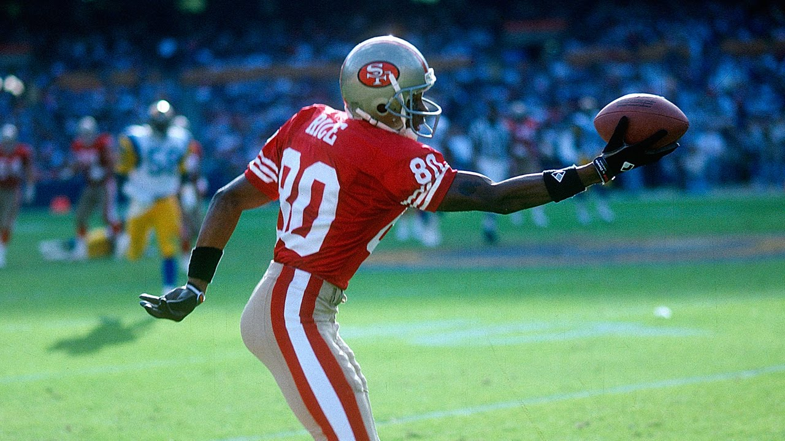
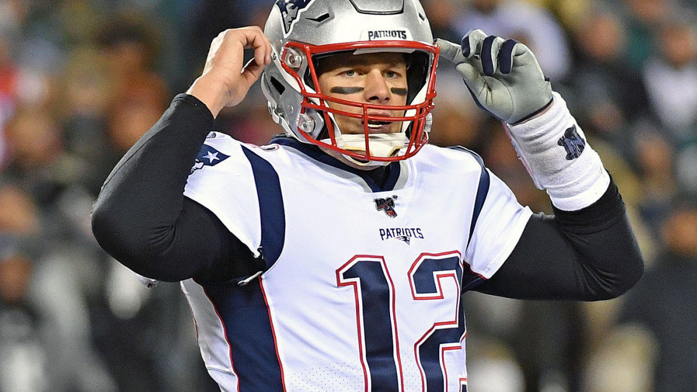
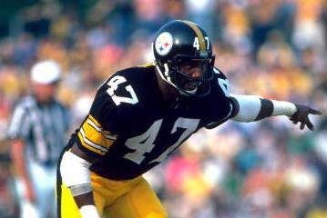
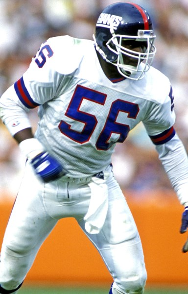
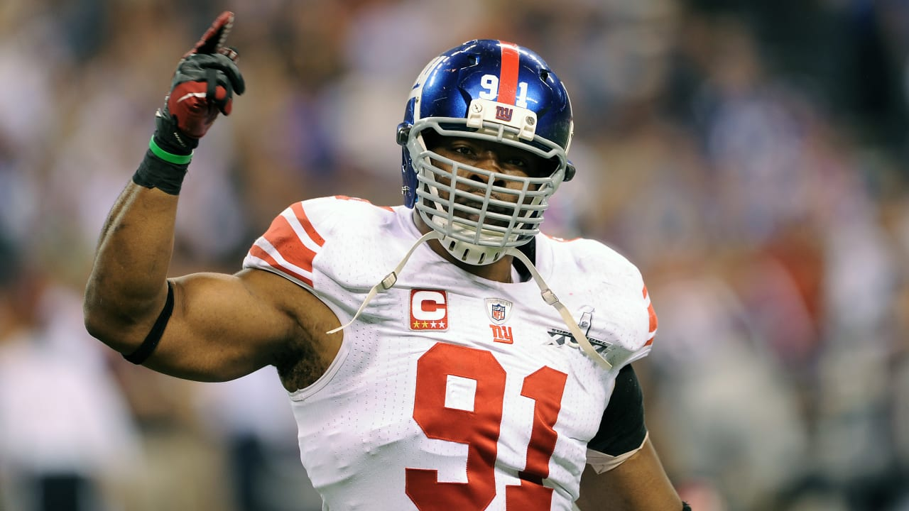

Top Players of all time
The NFL has had some incredible players dating back to the league's inaugural season back in 1920. These players have helped alter the course of the game while also helping create some of the greatest dynasties in the history of the game. Several of these iconic players are still playing today.
It’s one of the oldest barstool debates known to sports fans: who’s the greatest player of all time? With all the different players and styles of play throughout NFL history, how exactly are you supposed to measure that?
Do you give it to the guy with the best stats? The guy with the most wins? Or the guy with the most Super Bowl rings? Is it Jim Brown or Barry Sanders? What about Jerry Rice or Joe Montana? How about Peyton Manning or Tom Brady?
After pulling results from several different websites like BleacherReport, Espn, 247Sports, and Sportsdrop.com, the results are in...
Offense:
Defense:
Offense
Running Backs:
The running back position is shifting in today's era of football, but NFL history features an impressive group of star ball-carriers.
Up until the mid-2000s, a standout in the backfield could be an overwhelming difference-maker. A few modern players have become stars, too.
Most of the best running backs in NFL history played multiple decades ago. But where do Barry Sanders and Emmitt Smith fit alongside legends such as Jim Brown and Walter Payton?
| Name |
Years Played |
Super Bowls Won |
| Walter Payton |
1975-87 |
2 |
| Emmitt Smith |
1990-2004 |
3 |
| Jim Brown |
1957-66 |
1 |
| Barry Sanders |
1989-98 |
0 |
| Adrian Peterson |
2007-now |
0 |
.jpg)
Walter Payton was highlighted by an MVP-winning 1977 season with 1,852 rushing yards and 14 touchdowns, "Sweetness" surpassed the 1,200-yard barrier 10 times. No other player in NFL history has accomplished that. Payton's career 16,726 rushing yards stood as a record upon his retirement.
Emmitt Smith obliterated the NFL's record books. After 15 years in the league, the Cowboys legend held several NFL records—most notably standing atop the chart for single-season touchdowns (25), career rushing yards (18,355) and career rushing touchdowns (164). The latter two marks remain untouched.
Jim Brown merits a higher position. However, other interests swayed him from the football field after nine years. During that successful run, the Cleveland Browns star punished defenses for a then-record 12,312 yards and 106 touchdowns on the ground. He led the NFL in rushing eight times and was a first-team All-Pro choice in each of those years. Brown, who gathered three MVP awards, a trip to nine Pro Bowls and one NFL championship, entered the Hall of Fame in 1971.
Barry Sanders propelled the Lions franchise to the playoffs five times. Unfortunately, frustration with Detroit's inability to build a contender led Sanders to retire after 10 seasons. But what a decade it was, Sanders collected 1,300-plus rushing yards a stunning nine times, topping out at 2,053 yards in a 1997 MVP season. He totaled 15,269 yards on the ground, 2,921 as a receiver and 109 combined touchdowns.
Adrian Peterson being the only active player highlighted, he entered the league as a highly regarded prospect. Throughout 12 seasons and counting, the Oklahoma product has backed up the hype. Peterson was most successful during his 10-years playing with the Minnesota Vikings, running for 2,097 yards in 2012 and narrowly missing Dickerson's single-season record. AP finished with 11,747 rushing yards and 97 touchdowns as a member of the Vikings. Already a top-10 rusher in league history, Peterson has since played for three teams—the Arizona Cardinals, New Orleans Saints and Washington Redskins. The 2007 Offensive Rookie of the Year has an MVP, seven Pro Bowls and four first-team All-Pro's on his resume.
Wide Receivers:
Dozens of wide receivers have realistic arguments for a top-5 place, and the fact that their production comes in different eras of the league only complicates the discussion. The list is based on individual production and achievements, but era-adjusted contributions also factored into the order. AFL players were also considered.
| Name |
Years played |
Super Bowls Won |
| Jerry Rice |
1985-2006 |
3 |
| Don Hutson |
1935-45 |
3 |
| Randy Moss |
1998-2012 |
0 |
| Terrell Owens |
1996-2015 |
0 |
| Steve Largent |
1976-89 |
0 |

Jerry Rice is the undisputed No. 1 receiver in NFL history. No other wideout can touch the San Francisco 49ers legend's career numbers.
But after him, it's one massive debate at every single spot.
Dozens of wide receivers have realistic arguments for a top-10 place, and the fact that their production comes in different eras of the league only complicates the discussion. Picking out the 10 most worthy players is a challenging yet enjoyable task.
Jerry Rice obliterated all of the previous receiving records, bringing in 1,549 catches for 22,895 yards and 197 touchdowns. Still, even when breaking a mark was inevitable, he still felt pressure. In addition to his several other NFL-bests, the Hall of Famer won three Super Bowls, two Offensive Player of the Year honors, appeared in 13 Pro Bowls and made 10 first-team All-Pro lists. Jerry's most famous workout to improve his ability to catch, was catching bricks from his father!!
Don Hutson was the NFL's first elite receiver. He's the only player who suited up before 1945 to record 3,500 yards in his career.
Hutson wrapped up his 11 years in Green Bay at then-records of 488 receptions, 7,991 yards and 99 touchdowns. The MVP of the 1941 and 1942 seasons, he paced the league in several categories multiple times, including in receiving yards (seven), receptions (eight) and touchdowns (nine).During his career, Hutson won three championships with the Packers and earned a spot on eight All-Pro teams.
Randy Moss is the only receiver other than Jerry Rice to notch 10 seasons of 1,000-plus yards—one of which happened during an Offensive Rookie of the Year effort in 1998. Six occurred in Minnesota, followed by one with Oakland and three for the Patriots.
Though Moss has since dropped out of the all-time top 10 in receptions, the six-time Pro Bowler and four-time All-Pro ranks second in touchdowns (156) and fourth in receiving yards (15,292).
Terrell Owens induction into the Hall of Fame in 2018, his on-field performance demanded a place in Canton.
While "T.O." spent a majority of his career with the 49ers, he put together successful years with the Cowboys, Philadelphia Eagles, Bills and Cincinnati Bengals too. Owens registered nine seasons of 1,000-plus yards and eight with 10-plus touchdowns.
Overall, he racked up 1,078 receptions, 15,934 yards and 153 touchdowns and the latter two totals are top-three marks in NFL history. Owens gathered six Pro Bowl nods and five All-Pro honors.
In 1976, the Houston Oilers used a fourth-round pick on the Tulsa wideout before trading him to Seattle in the preseason. He quickly became a featured piece of the offense and notched eight straight 1,000-yard years, excluding the strike-shortened 1982 season. Largent twice led the NFL receiving.
His career totals of 819 catches, 13,089 yards and 100 touchdowns stood atop the NFL's record books. The 1988 Walter Payton Man of the Year appeared on seven Pro Bowl teams.
Quarterbacks:
The NFL has seen plenty of quarterbacks who have changed the game, from Slingin' Sammy Baugh's introducing the concept of a gunslinger in the late '30s to Joe Montana's role in pioneering the West Coast offense.
Regardless of the strides a quarterback made in his own time, it takes something more for one to go down in history as an all-time great. Virgil Carter led the NFL in completion percentage in 1971; Cam Newton holds the record for rushing touchdowns by a quarterback; Bart Starr won the first two Super Bowls.
But to be considered among the top 10 quarterbacks of all time, a player's accomplishments and sheer talent have to transcend offensive systems, Super Bowl wins and season records.
| Name |
Years Played |
Super Bowls Won |
| Tom Brady |
2000-now |
6 |
| Joe Montana |
1979-94 |
4 |
| Johnny Unitas |
1955-73 |
4 |
| Peyton Manning |
1998-2016 |
2 |
| Brett Farve |
1991-2010 |
1 |

Tom Brady may not have the mobility or arm strength of some of his contemporaries, but his other intangibles—namely, accuracy, decision-making and football IQ. His work ethic is tireless and has allowed him to overcome some of the aspects of his game that saw him fall to the sixth round in the 2000 NFL draft. He's also one of the most consistent passers in NFL history. He's never thrown more than 14 interceptions in a season and his completion rate has never dipped below 60 percent since he became a starter. Brady is also changing the way quarterbacks both train for and play the game in terms of nutrition and strength and conditioning, and he may very well go down as the oldest quarterback in NFL history before he retires. Through 2016 his stats were most certainly "GOAT" worthy. 61,582 yards; 63.8 completion percentage; 7.5 yards/attempt; 456 TDs; 152 interceptions; 1.8 interception percentage; 97.2 passer rating; five-time Super Bowl champion; four-time Super Bowl MVP; 12-time Pro Bowler; two-time NFL MVP; two-time NFL Offensive Player of the Year.
Joe Montana possessed one of the most crucial traits for a great quarterback: the ability to keep calm and operate at a high level under pressure. With Joe Cool under center, his teams were never out of it. The Comeback Kid led the San Francisco 49ers to a fourth-quarter win down 16-13 with a 97-yard drive in Super Bowl XXIII. Yes, Montana won four Super Bowls and was a three-time Super Bowl MVP, which often boosts his place in rankings like these. But his No. 2 spot here is about more than his championships. When his teams needed him most, he delivered. Tom Brady's postseason stats may be better, but Montana's are nothing to sneeze at; in the 49ers' 1988-89 playoff runs, Montana threw 19 touchdowns to just one interception as San Francisco won two consecutive Lombardi trophies. Joe's numbers: 40,551 yards; 63.2 completion percentage; 7.5 yards/attempt; 273 TDs; 139 interceptions; 2.6 interception percentage; 92.3 passer rating; four-time Super Bowl champion; three-time Super Bowl MVP; eight-time Pro Bowler; two-time NFL MVP; 1989 NFL Offensive Player of the Year.
Joe Montana would earn the nickname Joe Cool for his ability to keep calm under pressure, but Johnny Unitas exemplified that trait years earlier. And, like Drew Brees (6'0") would decades later, Johnny U made a name for himself as an undersized passer (6'1") who nonetheless led one of the most deadly passing offenses the league has seen. He also made his teammates believe they could win—and they did, with two NFL championships and a victory in Super Bowl V. Johnny's numbers: 40,239 yards; 54.6 completion percentage; 7.8 yards/attempt; 290 TDs; 253 interceptions; 4.9 interception percentage; 78.2 passer rating; Super Bowl V champion; two-time NFL champion; 10-time Pro Bowler; three-time NFL MVP.
If you were to create a quarterback in a lab, the first thing you would give him is Peyton Manning's brain. Manning's ability to diagnose coverages, audible at the line of scrimmage and win the mental battle against opposing defensive coordinators is second to no one. Manning increased the burden of football IQ and film study irrevocably for all future passers. He also consistently made his offensive line's job easier by evading pressures; his efficiency and diagnosis ability helped him keep his sack numbers ridiculously low (303 in 17 seasons). Peyton's numbers: 71,940 yards; 65.3 completion percentage; 7.7 yards/attempt; 539 TDs; 251 interceptions; 2.7 interception percentage; 96.5 passer rating; two-time Super Bowl champion; Super Bowl XLI MVP; 14-time Pro Bowler; five-time NFL MVP; two-time NFL Offensive Player of the Year.
"The Gunslinger" wasn't known for his accuracy. At 3.3 percent, Brett Favre has one of the highest interception percentages of any passer on this list—and yet he demonstrated one of the most powerful arms football has ever seen over his 20 seasons. Football's Iron Man also made a career out of his durability, setting an NFL record with 297 consecutive starts over 19 seasons and famously taking the field on Monday Night Football a day after the death of his father. Brett's numbers: 71,838 yards; 62.0 completion percentage; 7.1 yards/attempt; 508 TDs; 336 interceptions; 3.3 interception percentage; 86.0 passer rating; Super Bowl XXXI champion; 11-time Pro Bowler; three-time NFL MVP; 1995 NFL Offensive Player of the Year.
Defense
Defensive Backs:
| Name |
Years Played |
Super Bowls Won |
| Mel Blount |
1970-83 |
4 |
| Ronnie Lott |
1981-95 |
4 |
| Rod Woodson |
1987-2003 |
1 |
| Mike Haynes |
1976-89 |
1 |
| Deion Sanders |
1989-2005 |
2 |

How better to list our Blount's achievements than by just listing them? Keep in mind...he was a major part of the defense that was the major reason the Steelers won four Super Bowls. 5× Pro Bowl selection (1975, 1976, 1978, 1979,1981). 4× First-team All-Pro selection (1975, 1976,1977, 1981). 2× Second-team All-Pro selection (1978, 1979). 4× Super Bowl champion (IX, X, XIII, XIV). NFL 75th Anniversary All-Time Team. NFL 1980s All-Decade Team. 1975 NFL Defensive Player of the Year. 1975 NFL Defensive Back of the Year. 1976 Pro Bowl MVP.
The things that set Lott apart is that he played safety and corner back, along with four Super Bowl championships, making the All-Decade team twice (80's and 90's) and being a 10-Time Pro Bowl selection.
How can Woodson's career be summed up in one slide? Maybe the banner that hung in Three Rivers Stadium for years is the only way..."Rod is God." A stud CB turned Safety late in his career, he holds the NFL record for INTs returned for a TD (12), had 71 INTs, 32 fumble recoveries, '93 DPOY, '90's All-Decade Team, won a Super Bowl, was an 11-time Pro Bowl selection and was on the NFL 75th Anniversary Team. Then there is that Hall of Fame picture...that was pretty cool, too.
Haynes started out his career with a bang, catching eight interceptions as a rookie. He grew from there, recording 46 on his career. He was on the 75th Anniversary Team, the 1980's All-Decade Team, and a nine-time Pro Bowl selection. He's obviously in the Hall of Fame.
It seemed the only thing the Sanders couldn't do was what he didn't want to do. Two sports, DB, WR, KR, PR...to this day, when I see Sanders on TV I can't help but think of the old Pizza Hut commercials with him and Jerry Jones. It gave a new philosophy—instead of one or the other, have both. As for his football career, he may have missed the 75th Anniversary Team, but that's about all he didn't accomplish. Eight Pro Bowls, two Super Bowl wins, 1994 DPOY, two-time NFC DPOY and his 2011 Hall of Fame Induction. He really did transfrom the position.
Linebackers:
No feared defense is complete without an aggressive, hard-hitting, smart linebacker. And NFL history sure is loaded with elite talent in the front seven. If you're a fan of NFL history, it's no surprise the all-time list is littered with Chicago Bears and Pittsburgh Steelers. But the diversity of the group's skill sets is also fascinating. Some could track down any ball-carrier, some were elite in coverage or at creating turnovers, and others were pass-rushing nightmares. There is no perfect formula of what makes a legendary linebacker, but these standouts have become the prototypes. Individual production, achievements and longevity all factored into the order.
| Name |
Years Played |
Super Bowls Won |
| Lawrence Taylor |
1981-93 |
2 |
| Ray Lewis |
1996-2012 |
2 |
| Mike Singletary |
1981-92 |
1 |
| Jack Lambert |
1974-84 |
1 |
| Dick Butkus |
1965-73 |
0 |

Until J.J. Watt came around, Lawrence Taylor was the only player to ever secure three Defensive Player of the Year honors. The No. 2 selection of the 1981 draft won both Defensive Rookie and Player of the Year that season. He garnered DPOY recognition in 1982 and 1986, winning NFL MVP in the latter season. Taylor racked up a career-best 20.5 sacks en route to the MVP. Overall, L.T. tallied 132.5 sacks, 10 Pro Bowls and eight All-Pro nods as well as helped the Giants win two Super Bowls. Although off-field troubles have dimmed the shine on his NFL days, Taylor finished his career as the most dominant linebacker ever.
Ray Lewis would squirrel-dance into the stadium and quickly ruin the opposing offense's game plan. On the field, the high-energy linebacker served as the centerpiece of the Baltimore Ravens defense for 17 years. During his second season, Lewis amassed 184 tackles. He won Defensive Player of the Year in 2000 and repeated the feat in 2003. The Super Bowl XXXV MVP won a second championship in 2012 and danced into retirement with 2,055 career tackles, 41.5 sacks and 51 total takeaways.
The '85 Bears are almost a mythical team at this point, given that every elite defense is compared to that Mike Singletary-led unit. That season was simply one stage in a Hall of Fame career. Singletary won Defensive Player of the Year in 1985 and 1988, grabbed seven first-team All-Pro honors and made 10 Pro Bowls. Singletary totaled 1,488 tackles along with his 12 fumble recoveries and seven interceptions. Considering his attitude toward ball-carriers, that's no surprise.
Jack Lambert hardly knew anything but success. He won Defensive Rookie of the Year and celebrated a Super Bowl victory in 1974. Alongside Ham, Lambert helped the Steelers hoist the Lombardi Trophy four times. The 1976 Defensive Player of the Year put together six first-team All-Pro and nine Pro Bowl campaigns. Beyond his impact as a tackler, Lambert snatched 28 interceptions and pounced on 17 fumbles. His eight recoveries in 1976 are the most ever by a linebacker.
We're only talking about the nicknames bestowed upon Dick Butkus. The Animal. The Enforcer. The Maestro of Mayhem. The Robot of Destruction. Legendary. His NFL career was nothing short of sensational. An eight-time Pro Bowler and five-time first-team All-Pro, Butkus won Defensive Player of the Year in both 1969 and 1970. He jumped on 27 fumbles and picked off 22 passes. The first-ballot Hall of Famer headed to Canton in 1979.
D-Linemen:
In some cases, the cornerstone of a great defense is a defensive line. I would rather have a team with a great defensive line, and average defensive backs, than a defensive line that can't do anything, and a great linebacking corp or secondary.
| Name |
Years Played |
Super Bowls Won |
| Justin Tuck |
2004-16 |
2 |
| Jared Allen |
2004-16 |
1 |
| Julius Peppers |
2002-19 |
0 |
| Trent Cole |
2005-17 |
0 |
| Shaun Rogers |
2000-11 |
0 |

Tuck was Strahan's backup when he was added to the team. People think that only quarterback benching works and the rest of the rookies need to play to learn, but Strahan is the ultimate tutor, and all you have to do is look at how much Tuck has learned from him. Justin Tuck is the best pass rusher that plays the run. After I saw him in the Super Bowl, I knew this guy was going to be a star, and he has shined brighter than the sun.
When Kansas City traded Jared Allen, who had 15.5 sacks in his last year, many questioned the sanity of both teams. Minnesota gave up its first round selection, both of its third round selections and swapped sixth round selections in order to get Jared Allen in purple. Kansas City is a team that is severely rebuilding, and it needs draft picks to do that, but Jared Allen was a player who, defensively, they could rely on. Minnesota wanted to put him with its Williams duo, Pat and Kevin at defensive tackle, and see if the Purple People Eaters could come back. So far, Minnesota got the best deal. Jared Allen had 14.5 sacks this season along with 41 solo tackles and 13 assists. His three forced fumbles add an extra check to his Pro Bowl season.
Julius Peppers is one of the true elite defensive ends. 40 solo tackles, 11 assists, 14.5 sacks, and 5 forced fumbles. Just an incredible player.
Trent Cole is the best lineman against the run, and the tackles speak for themselves, 59 solo tackles with 18 assists. That is the most of any defensive linemen this year. Add that to nine sacks and two forced fumbles, and you got a very good player. People look at the Eagles, and think: Brian Westbrook, Terrell Owens and his stint there, DeSean Jackson, and Donovan McNabb. But the defense for the Eagles is huge, and all you have to do is look at the victories over the Cowboys and Steelers. The pressure they put on those teams combined with the ruthlessness of the defensive coordinator, Jim Johnson, and that team is arguably the best defensive team in the league, and Trent Cole's success is a great point to bring up in that sort of debate.
This Cleveland Browns defensive line had many injuries to it and yet, Shaun Rogers not only stays healthy, but steps up and succeeds. 4.5 sacks, 61 solo tackles, 15 assists for a total of 76 tackles. This man is an inhuman beast to centers. What also got him on this list so high was also one play I will never forget. Monday Night Football: Its a game, and even though I have to listen to the easily excited trio of Ron Jaworski, Mike Tirico, and Tony Kornheiser. The game was expected to be a blow out and heck, look who it was: New York Giant at Cleveland Browns. Forget it, Eli Manning is going to humiliate the Browns and Derek Anderson and Braylon Edwards will start a streak of consecutive incompletes together. The Giants are driving, Eli calls the play and Shaun Rogers just comes barreling down on Eli like a rabid dog is really released from the Dawg Pound, and Eli just throws it in the air to avoid a sack, and Eric Wright intercepts it, taking it back to the house. Touchdown Cleveland! That was it. All because of Shaun Rogers. The pressure he gave Eli was nothing less than amazing. Even though Eli threw the ball away, he still landed flat on his back with a hurt body.